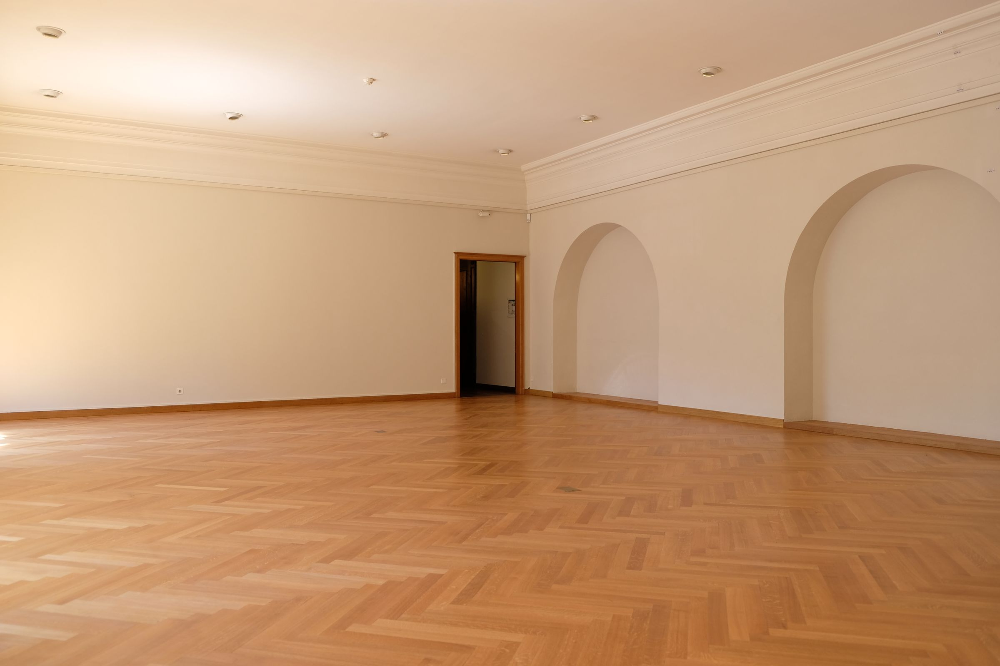
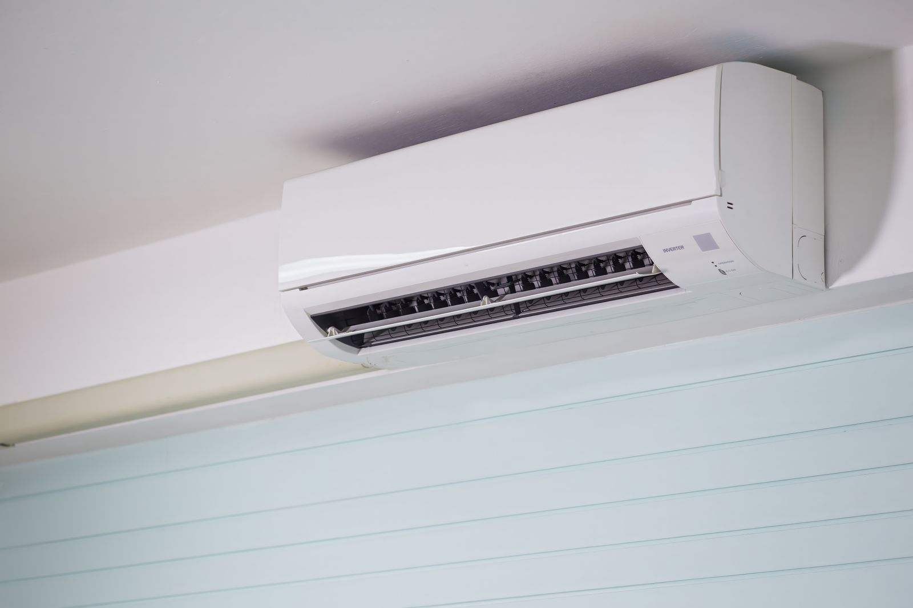
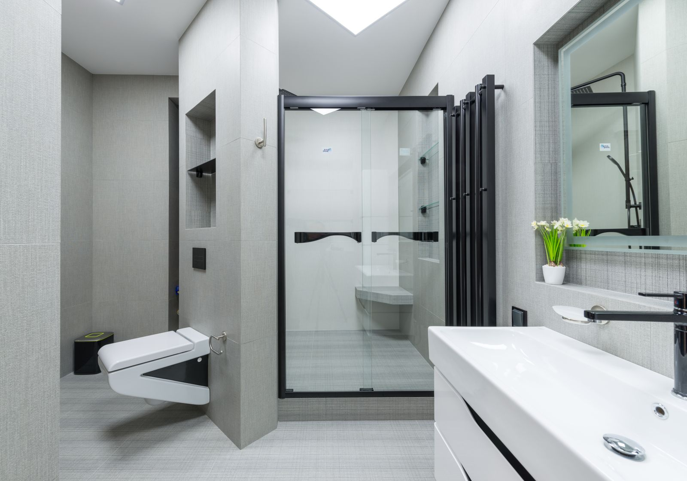
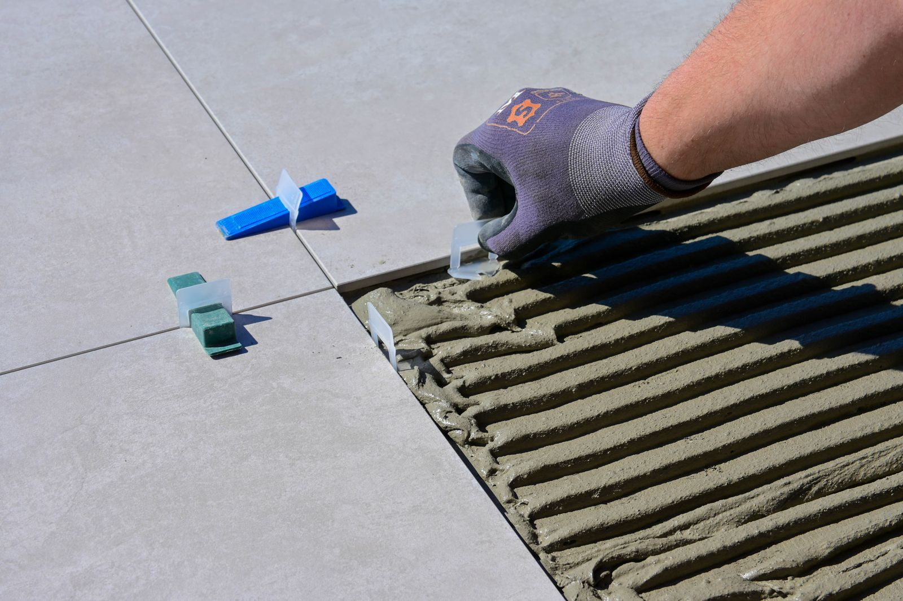
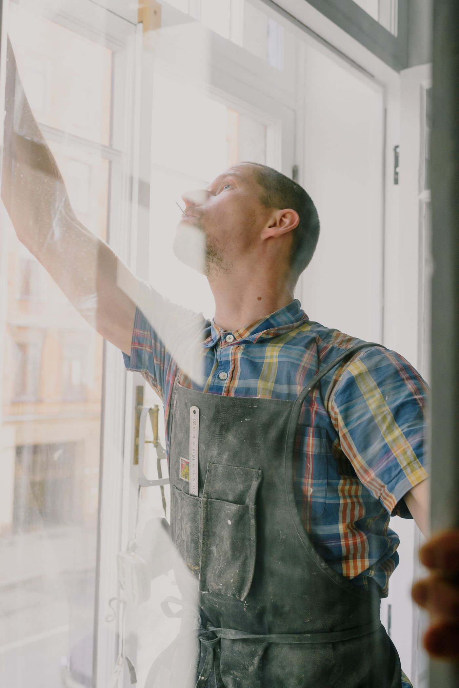

Disponibile per urgenze — Milano e provincia
Un solo professionista
per tutta
la casa
Idraulica, caldaie e condizionatori. Bagni, muratura, piastrelle, riparazioni. Vent'anni di cantiere, un numero solo da chiamare.
Sopralluogo e preventivo gratuiti, senza impegno.
Non un tuttofare improvvisato.
Un capocantiere con un secondo mestiere.
-
Muratore
Vent'anni in imprese edili, dal primo mattone alle strutture.
-
Capo squadra
Responsabile di cantiere: uomini, tempi e lavoro consegnato finito.
-
Idraulico
Specializzazione in caldaie, condizionatori e impianti idraulici.
Cosa faccio
Se riguarda la casa, quasi sempre è lavoro mio. Se non lo è, te lo dico subito.
-

Idraulica e caldaie
Installazione e sostituzione di caldaie, perdite, scarichi otturati, rubinetteria, radiatori, autoclavi e allacci.
-

Condizionatori
Installazione e sostituzione di split e multisplit, spostamento di unità esistenti, manutenzione e pulizia dei filtri prima dell'estate.
-

Bagni e ristrutturazioni
Rifacimento completo del bagno, dalla demolizione ai sanitari montati. Un solo cantiere, un solo interlocutore.
-

Muratura e cartongesso
Tramezze, aperture, ripristini e rasature. Contropareti, controsoffitti e nicchie in cartongesso.
-

Piastrelle e pavimenti
Posa di pavimenti e rivestimenti, battiscopa, fughe rifatte, sostituzione di piastrelle rotte o staccate.
-

Riparazioni e piccoli lavori
Porte che non chiudono, tapparelle, mensole, zanzariere, silicone: tutto quello che si rimanda da mesi.
-

Tinteggiatura e finiture
Imbiancatura di stanze e appartamenti, stucco, ritocchi e finiture dopo il lavoro grosso.
Tocca un servizio: si apre WhatsApp con il messaggio già pronto.

Sono Gabriel
Ho iniziato in cantiere come muratore e ci sono rimasto vent'anni, arrivando a guidare la squadra e a seguire i lavori dall'inizio alla fine. Poi mi sono specializzato in idraulica: caldaie, condizionatori, impianti, bagni.
Il vantaggio di aver fatto tutti e due i mestieri è semplice. Quando devo spostare uno scarico so anche cosa c'è dentro quel muro, e quando chiudo un muro so come ci passa un tubo. Chi chiama tre ditte diverse, di solito, le fa litigare tra loro.
Vengo a vedere il lavoro, ti dico cosa serve e quanto costa. Poi decidi tu.
Gabriel Calasi — Milano e provincia
Come funziona
Tre passaggi, nessuna sorpresa in fondo.
-
Mi scrivi su WhatsApp
Anche solo una foto del problema. Di solito capisco subito se è lavoro mio e che cosa serve.
-
Vengo a vedere
Sopralluogo e preventivo gratuiti, senza impegno. Il prezzo lo sai prima che inizi.
-
Faccio il lavoro
E lascio pulito. Quello che sporco lo pulisco io, non resta a te.
Dicono di me
-
Caldaia morta di venerdì sera, con due bambini piccoli in casa. L'ho chiamato su WhatsApp e il sabato mattina alle 8 era da noi. Ha trovato il guasto in mezz'ora, ha recuperato il pezzo e per pranzo avevamo di nuovo l'acqua calda. Prezzo onesto, detto prima e rispettato.
Marco P.Cinisello Balsamo · riparazione caldaia d'urgenza
-
Abbiamo rifatto il bagno completamente: demolizione, nuovi scarichi, piastrelle e sanitari. Si vede che viene dall'edilizia vera, non è il classico "so fare un po' di tutto". Cantiere pulito ogni sera, tempi rispettati e ci ha consigliato lui dove risparmiare invece di venderci il lavoro più costoso.
Silvia R.Milano · rifacimento completo del bagno
-
Lo chiamiamo ormai per qualsiasi cosa: una crepa sul muro, una perdita sotto il lavello, la porta che non chiudeva più. La cosa che apprezzo di più è che risponde sempre e se non può venire subito te lo dice chiaramente, senza farti perdere tempo. Persona seria, di quelle che ormai si trovano poco.
Giuseppe T.Sesto San Giovanni · riparazioni e manutenzioni
Hai qualcosa da sistemare in casa?
Scrivimi su WhatsApp con una foto, oppure chiamami. Rispondo io, non un centralino.
+39 320 417 7267Milano e provincia — sopralluogo e preventivo gratuiti.